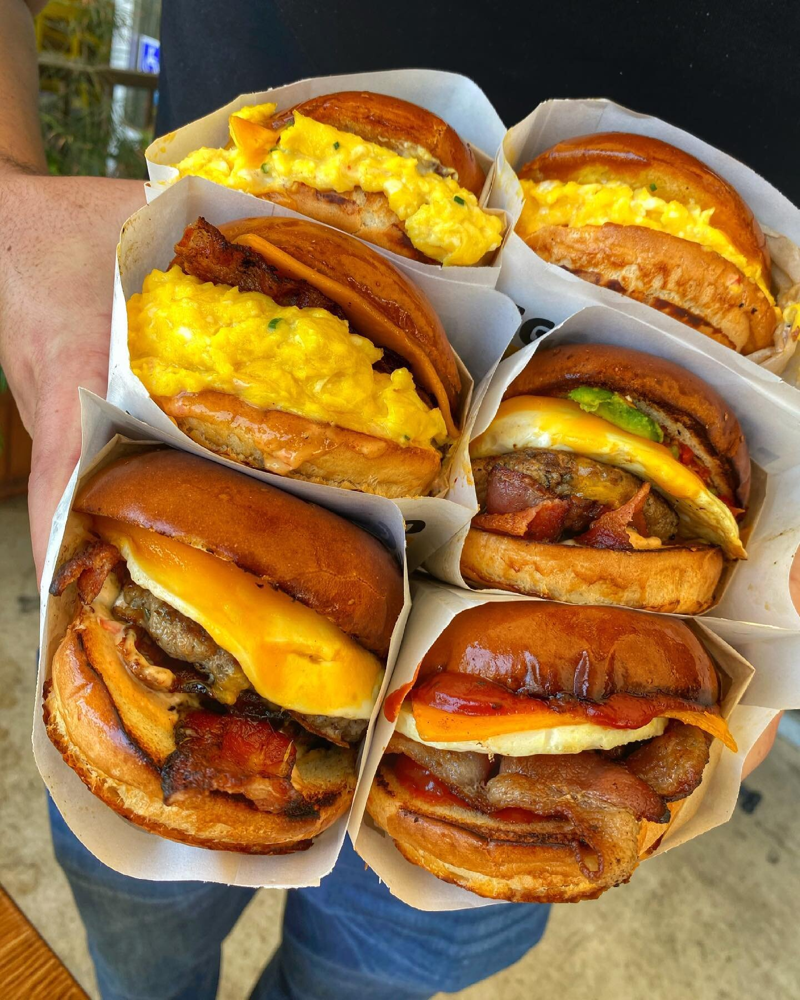

Egg Sandwich

Description:
This is a flexible recipe for an array of different types of egg sandwiches. The foundation for a basic
egg sandwich will be the same but any meat can be substituted for other meats, or more meat can be added,
as well as the amount of eggs and the toppings like tomatoes and mayonaise. You will need a pan,
some fat to coat the pan, a plate for the ingredients and finished product, somewhere to toast your bread
and the following ingredients:
Ingredients:
- Bread
- cheese
- choice of meats(examples like sausage, ham, bacon, steak)
- eggs
- toppings and condoments(like mayo and tomatoes)
Steps:
- Grab your pan and heat it up.
- While the pan is heating up, toast your bread and spread mayonaise on your bread.
- Once the pan is heated up, add the fat of choice.
- Fry the meat of choice.
- Once meat is cooked, remove the meat and place on top of your slathered bread.
- Place your slice of cheese on top of the meat so that it will melt.
- Add the eggs to the pan, and fry in the meat juice and oil in the pan.
- Once eggs are cooked to your preference, remove eggs from pan and place atop the cheese on your sandwich.
- You have the option of adding or substituting the meats and cheeses. If you wish to have more eggs and meat
, simply cook some more and stack on your sandwich. At this point, you can also add the topings of your choice.
- The sandwich should be complete.